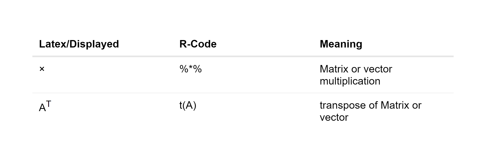

Chapter 4 Matrix Algebra
This chapter is a summary of the mathematical calculations and conventions used in this Thesis. Its importent to note that all mathematical formulars are notated in a matrix notation. Most of the time this will result in a direct translation into R-code.
4.1 Basic Operators
The following table is a little compendium which will compare the used mathimatical symbols to R-code and its meanings: 